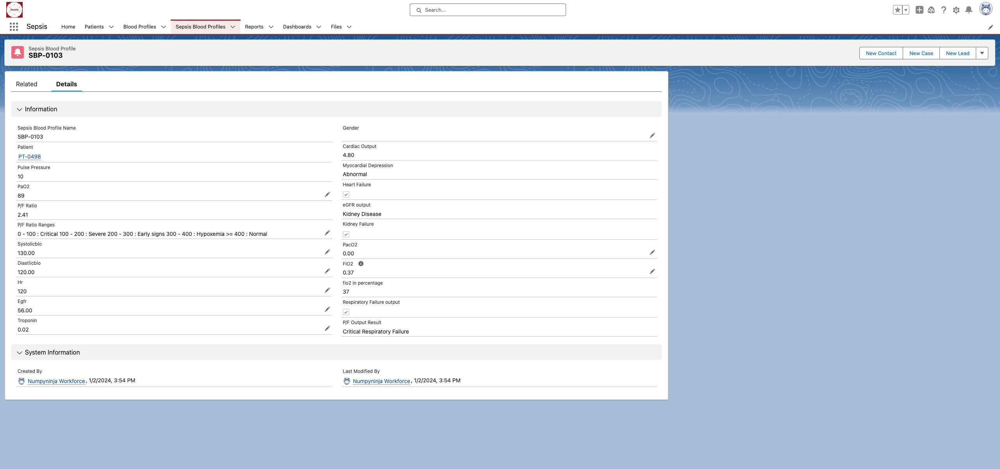
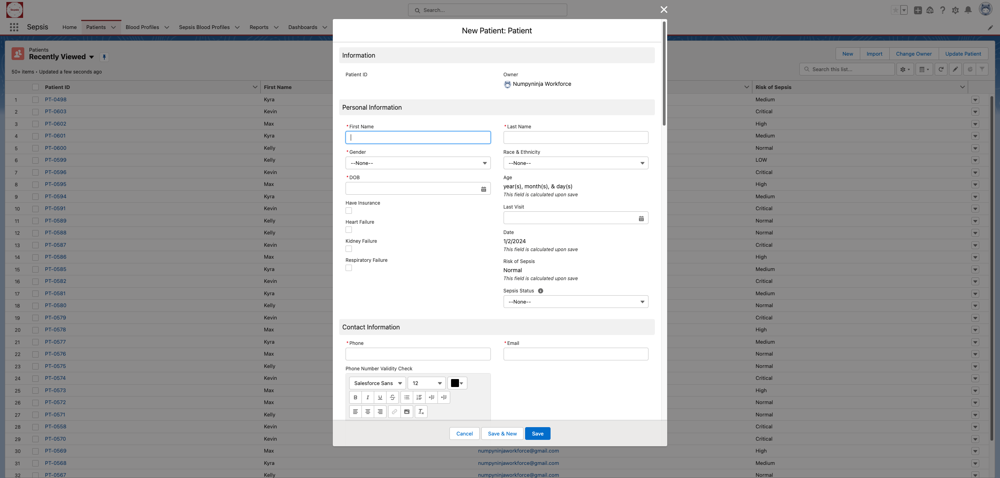
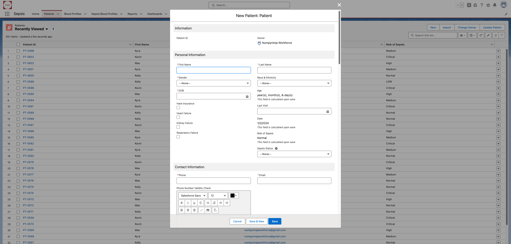
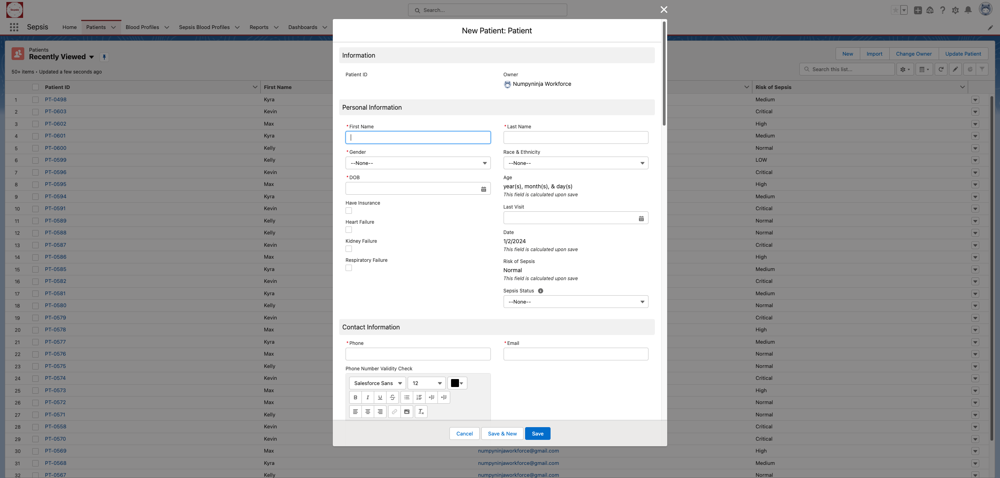
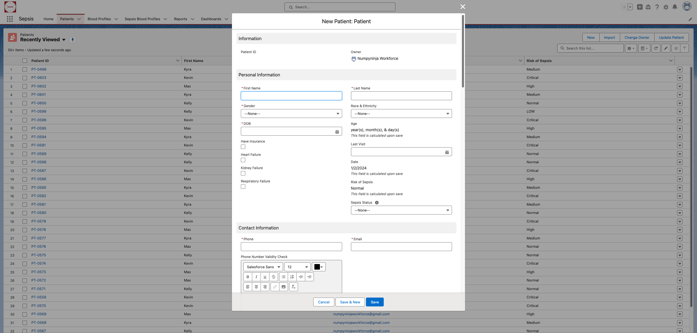
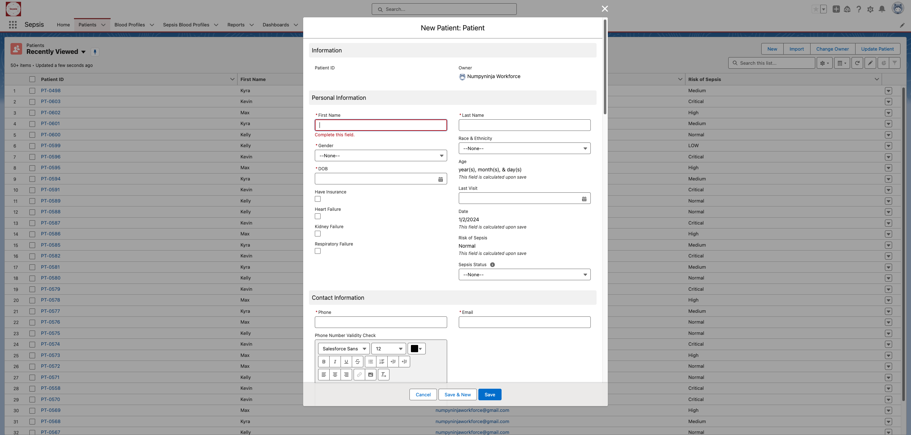
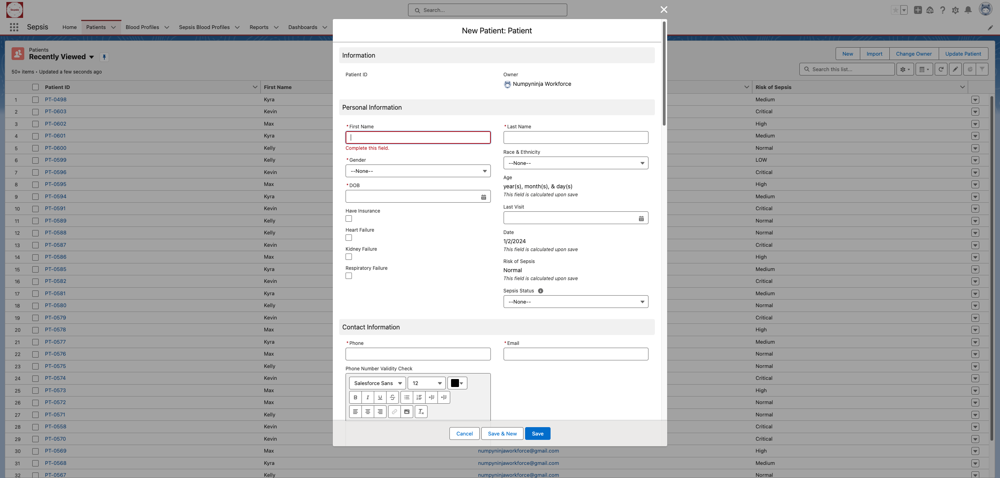
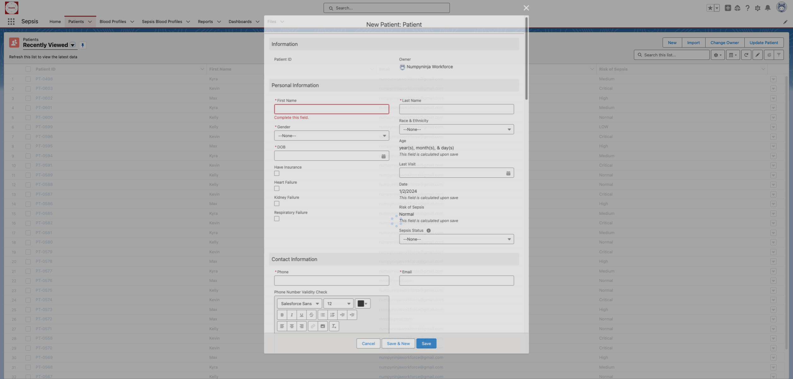
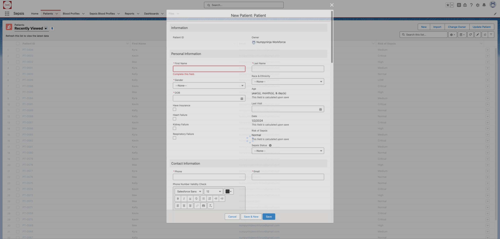

Started
Jan 2, 2024 05:52:44 PM
Ended
Jan 2, 2024 05:54:49 PM
Features Passed
7
Features Failed
7
Features
Scenarios
Steps
Timeline
Tags
| Name | Passed | Failed | Skipped | Others | Passed % |
|---|---|---|---|---|---|
| @TS_01ValidateExistingMorbidities-availabletochosen | 1 | 1 | 0 | 0 | 50% |
| @TS_06BP | 1 | 1 | 0 | 0 | 50% |
| @TS_02Medication | 1 | 1 | 0 | 0 | 50% |
| @UploadBloodReport | 1 | 1 | 0 | 0 | 50% |
| @TS_05ValidateTheotherTextboxinExistingInfections | 1 | 1 | 0 | 0 | 50% |
| @TS_12ValidateImmunizationDropDown | 1 | 1 | 0 | 0 | 50% |
| @TS_04ValidateTheAllergyCheckbox | 1 | 1 | 0 | 0 | 50% |
| @TS_09ValidatingtheNewPatientformWithValidDataForCritical | 1 | 1 | 0 | 0 | 50% |
| @NewPatientInformation | 5 | 5 | 0 | 0 | 50% |
| @TS_11ValidateTheSurgeriesCheckbox | 1 | 1 | 0 | 0 | 50% |
| @Login | 2 | 0 | 0 | 0 | 100% |
| @TS_01_ValidatePersonalInfo | 1 | 1 | 0 | 0 | 50% |
| @TS_02ValidateUndoExistingMorbidities | 1 | 1 | 0 | 0 | 50% |
| @TS_04HeartRate | 1 | 1 | 0 | 0 | 50% |
| @TS_06ValidateHabitsOption-availabletochosen | 1 | 1 | 0 | 0 | 50% |
| @TS_01ValiditateBloodProfileuploadfiles | 1 | 1 | 0 | 0 | 50% |
| @TS_07ValidatingtheNewPatientformWithInValidEmail | 1 | 1 | 0 | 0 | 50% |
| @TS_02ValidatingtheNewPatientformWithInvalidData | 1 | 1 | 0 | 0 | 50% |
| @TS_09WBC | 1 | 1 | 0 | 0 | 50% |
| @TS_03ValiditateSepsisBloodProfileSavedForm | 1 | 1 | 0 | 0 | 50% |
| @TS_08GlucoseValue | 1 | 1 | 0 | 0 | 50% |
| @TS_02ValiditateSepsisBloodProfileNewForm | 0 | 2 | 0 | 0 | 0% |
| @TS_13ValidateInternationalTravelCheckbox | 1 | 1 | 0 | 0 | 50% |
| @PatientInformationWithValidandInvalidAndMissingData | 10 | 10 | 0 | 0 | 50% |
| @TS_05_ValidateMedicalHistory | 1 | 1 | 0 | 0 | 50% |
| @TS_08ValidatingtheNewPatientformWithValidDataForSepsisStatus | 2 | 2 | 0 | 0 | 50% |
| @TS_05ValidatingtheNewPatientformWithInvalidDOB | 1 | 1 | 0 | 0 | 50% |
| @TS_03Temparature | 1 | 1 | 0 | 0 | 50% |
| @TS_01LoginPage | 2 | 0 | 0 | 0 | 100% |
| @TS_06ValidatingtheNewPatientformWithInvalidExisMorb | 1 | 1 | 0 | 0 | 50% |
| @TS_07Glucose | 1 | 1 | 0 | 0 | 50% |
| @Vitals | 9 | 9 | 0 | 0 | 50% |
| @SepsisBloodProfile | 2 | 4 | 0 | 0 | 33.333% |
| @TS_05RespiratoryRate | 1 | 1 | 0 | 0 | 50% |
| @TS_10ValidateSaveButton | 1 | 1 | 0 | 0 | 50% |
| @TS_10ValidateFitnessFrequencyDropDown | 1 | 1 | 0 | 0 | 50% |
| @ExistingMorbidities | 13 | 13 | 0 | 0 | 50% |
| @TS_03_ValidateEmergencycontact | 1 | 1 | 0 | 0 | 50% |
| @TS_02_ValidateContactInfo | 1 | 1 | 0 | 0 | 50% |
| @TS_03ValidateTheotherTextbox | 1 | 1 | 0 | 0 | 50% |
| @TS_01ValidatingtheNewPatientformWithMissingData | 1 | 1 | 0 | 0 | 50% |
| @TS_04ValiditateOrganFailureInPatientSavedForm | 1 | 1 | 0 | 0 | 50% |
| @TS_07ValidatePhysicalFitnessoption-availabletochosen | 1 | 1 | 0 | 0 | 50% |
| @TS_04ValidatingtheNewPatientformWithInvalidBPdata | 1 | 1 | 0 | 0 | 50% |
| @TS_04_ValidateProviderInformation | 1 | 1 | 0 | 0 | 50% |
| @TS_09ValidateFamilyHistory-leftarrowbtn | 1 | 1 | 0 | 0 | 50% |
| @TS_03ValidatingtheNewPatientformWithInvalidCharacter | 1 | 1 | 0 | 0 | 50% |
| @TS_08ValidateFamilyHistory-moreoptionsavailabletochosen | 1 | 1 | 0 | 0 | 50% |
System/Environment
| Name | Value |
|---|---|
| AppName | SalesForceSepsisApplication |
| user | VeenaShravanthi |
| os | window |
-
SalesforceLoginSepsisapp
5:52:44 PM / 00:00:05:736 Pass
SalesforceLoginSepsisapp
01.02.2024 5:52:44 PM 01.02.2024 5:52:50 PM 00:00:05:736 · #test-id=1PassValidate loginPageGiven The patient is on Signin page of salesforce applicationWhen The patient enter valid "username" and "password"And The user click on login buttonThen The user redirected to SalesForceHomepage -
Validating the New Patient information
5:52:50 PM / 00:00:05:580 Pass
Validating the New Patient information
01.02.2024 5:52:50 PM 01.02.2024 5:52:55 PM 00:00:05:580 · #test-id=11PassValidating the PersonalInfoPassValidating the PersonalInfoGiven Patient is on New patient formWhen Patient enters "Kelly","Rob",Gender, Race, "11/1/2023" and "atena4656" on personal informationThen Patient can see the "Kelly","Rob","11/1/2023","atena4656"and other details entered on personal informationPassValidating the contactinfoPassValidating the contactinfoGiven Patient is on same patient formWhen Patient enters the "815-456-9999" , "numpyninjaworkforce@gmail.com", "United States", "Egmore St","Bayarea" and "77433" on contact informationThen Patient can see the "815-456-9999" , "numpyninjaworkforce@gmail.com", "United States", "Egmore St","Bayarea" and "77433" entered on contact informationPassValidating the EmergencyContactPassValidating the EmergencyContactGiven Patient is on same patient formWhen Patient enters "Kiya" and "716-456-7890"Then Patient can see the "Kiya" and "716-456-7890"entered on emergency contact infoPassValidating the ProviderInformationPassValidating the ProviderInformationGiven Patient is on same patient formWhen Patient enters "Klein" and "321-456-7890" and "BrightClinic" and "numpyninjaworkforce@gmail.com"Then Patient can see the "Klein" and "321-456-7890" and "BrightClinic" and "numpyninjaworkforce@gmail.com" entered on provider informationPassValidating the EmergencyContactPassValidating the EmergencyContactGiven Patient is on same patient formWhen Patient enters "12.00" and "60" on medical historyThen Patient can see the "12.00" and "60" entered on medical history -
Validitate Existing Morbidities
5:52:55 PM / 00:00:03:860 Pass
Validitate Existing Morbidities
01.02.2024 5:52:55 PM 01.02.2024 5:52:59 PM 00:00:03:860 · #test-id=52PassValidate Existing Morbidities available to chosenGiven Patient is on available list box of existing morbiditiesWhen Patient selects an existing morbidity in the list availableAnd clicks the right arrowThen Patient should able to see the selected option "High Cholesterol" in the chosen list boxPassValidate the Undo button on Existing MorbiditiesGiven Patient is on chosen list box of existing morbiditiesWhen Patient clicks on undo buttonThen Patient should be able to see the error msg "An option must be selected"PassValidate the Other textboxGiven Patient is on available list box of existing morbiditiesWhen Patient selects "other" as an existing morbidity in the list availableAnd clicks the right arrow of existing morbidities listboxThen Patient should be able enter the "Sinuscitis" in the text boxPassValidate the Allergy CheckboxGiven Patient is on available list box of existing morbiditiesWhen Patient selects the allergy check boxThen Patient should be able enter the text "peanuts" in the text boxPassValidate the Other textbox in Existing InfectionsGiven Patient is on available list box of existing morbiditiesWhen Patient selects an existing infection in the list availableAnd clicks the right arrow of existing Infections listboxThen Patient should be able enter the "Pneumonia" in the text box of existing infectionsPassValidate selecting Habits options from available to chosenGiven Patient selects a habit in the list availableWhen Patient clicks the right arrowAnd Patient selects one more optionAnd Patient clicks the right arrowThen Patient should able to see the "Alcohol","Drugs" in the chosen list boxPassValidate selecting Physical fitness options from available to chosenGiven Patient selects a fitness option in the list availableWhen clicks on the right arrowThen Patient should able to see the selected option "Yoga" in the fitness chosen list boxPassValidate selecting Family History options more than one from available to chosenGiven Patient selects more than one option holding shift from the list availableWhen Patient clicks on the right arrow of Family HistoryThen Patient should able to see the selected "Diabetes", "Thyroid" in the chosen list boxPassValidate selecting Family History left arrow from chosen to availableGiven Patient selects an option holding from the list chosenWhen Patient clicks on the left arrow of Family HistoryThen Patient should not be able to see the selected "Diabetes" in the chosen list boxPassValidate Fitness Frequency DropDownGiven Patient is on existing morbidities sectionWhen Patient clicks on Fitness Frequency dropdownThen Patient should be able to select an option from the Fitness Frequency dropdownPassValidate the Surgeries CheckboxGiven Patient is on existing morbidities sectionWhen Patient selects the surgeries check boxThen Patient should be able enter the text "Heart Surgery" in the text boxPassValidate Immunization DropDownGiven Patient is on existing morbidities sectionWhen Patient clicks on Immunization dropdownThen Patient should be able to select an option from the Immunization dropdownPassValidate the International Travel CheckboxGiven Patient is on existing morbidities sectionWhen Patient selects the International Travel check boxThen Patient should be able enter the "India" in the Enter Country Name text box -
Validating Medication and Vitals Information
5:52:59 PM / 00:00:02:562 Pass
Validating Medication and Vitals Information
01.02.2024 5:52:59 PM 01.02.2024 5:53:02 PM 00:00:02:562 · #test-id=154PassThe Patient is logged in to Saleforce app(Sepsis)Given Patient is on Sepsis App Patients pageWhen Patient clicks on Current Medication textboxThen Patient enter "Vitamin D" in textboxPassValidate TemperatureGiven Patient is on Sepsis App Patients pageWhen Patient clicks on Temperature textBoxThen Patient enter Temperature "98.8" in textBoxPassValidate Heart RateGiven Patient is on Sepsis App Patients pageWhen Patient clicks on Heartrate textBoxThen Patient enter Heart Rate "90" in textBoxPassValidate Respiratory RateGiven Patient is on Sepsis App Patients pageWhen Patient clicks on Respiratory Rate textBoxThen Patient enter Reaspiratory Rate "15" in textBoxPassValidate BPGiven Patient is on Sepsis App Patients pageWhen Patient clicks on BP textBoxThen Patient enter BP "110/80" in textBoxPassValidate GlucoseGiven Patient is on Sepsis App Patients pageWhen Patient clicks on Glucose dropdownThen Patient select Glucose from dropdownPassValidate Glucose ValueGiven Patient is on Sepsis App Patients pageWhen Patient clicks on Glucose Value textBoxThen Patient enter Glucose Value "100" in textBoxPassValidate WBCGiven Patient is on Sepsis App Patients pageWhen Patient clicks on WBC textBoxThen Patient enter WBC "3000" in textBoxPassValidate Save ButtonGiven Patient is on Sepsis App Patients pageWhen Patient clicks on save buttonThen the form should be saved succesfully by displaying a message -
Validating the New Patient form with Valid/Invalid/MissingData
5:53:02 PM / 00:01:01:691 Pass
Validating the New Patient form with Valid/Invalid/MissingData
01.02.2024 5:53:02 PM 01.02.2024 5:54:04 PM 00:01:01:691 · #test-id=218PassValidate the patient information form submission with missing dataPassValidate the patient information form submission with missing dataGiven Patient is on New patient form for entering patient detailsWhen Patient submits new patient form with missing data from "PatientDetails" and 0And Error message "We hit a snag." is displayed and review the following fieldThen Error message "Complete this field." is displayedPassValidate the patient information form submission with invalid phonefieldPassValidate the patient information form submission with invalid phonefieldGiven Patient is on same patient formWhen Patient submits new patient form with invalid data for phone field from "PatientDetails" and 1Then Error message "US phone numbers should be in this format: (999) 999-9999." is displayed under phone fieldPassValidate the patient information form submission with invalid characterPassValidate the patient information form submission with invalid characterGiven Patient is on same patient formWhen Patient submits new patient form with invalid data for textfields from "PatientDetails" and 2Then Error message "Please enter only Alphabets" is displayed under textfieldsPassValidate the patient information form submission with invalid data for BPPassValidate the patient information form submission with invalid data for BPGiven Patient is on same patient formWhen Patient submits new patient form with invalid data for BP field from "PatientDetails" and 3Then Error message "BP should be in Systolic and Diastolic" is displayed under BP fieldPassValidate the patient information form submission with invalid dataPassValidate the patient information form submission with invalid dataGiven Patient is on same patient formWhen Patient submits new patient form with invalid data for DOB from "PatientDetails" and 4Then Error message "DOB cannot be in future.pls change it to sometime past." is displayed under DOB fieldPassValidate the patient information form submission with invalid dataPassValidate the patient information form submission with invalid dataGiven Patient is on same patient formWhen Patient submits new patient form entering other for morbidities from "PatientDetails" and 5Then Error message "Please explain only other existing morbidities!" is displayed under existing morbidityPassValidate patient information form submission with invalid dataPassValidate patient information form submission with invalid dataGiven Patient is on same patient formWhen Patient submits new patient form with invalid email from "PatientDetails" and 6Then Error message "You have entered an invalid format." is displayed under emailPassValidate patient information form submission with valid data for risk of SepsisPassValidate patient information form submission with valid data for risk of SepsisGiven Patient is on New patient form for entering patient infoWhen Patient submits new patient form with valid data from "PatientDetails" and 9Then Patient can see the risk of sepsis status to be "Medium" on the saved formPassValidate patient information form submission with valid data for risk of SepsisGiven Patient is on New patient form for entering patient infoWhen Patient submits new patient form with valid data from "PatientDetails" and 11Then Patient can see the risk of sepsis status to be "High" on the saved formPassValidate attendance form submission with valid data for Critical riskPassValidate attendance form submission with valid data for Critical riskGiven Patient is on same patient formWhen Patient submits new patient form with valid data for critical from "PatientDetails" and 13Then Patient can see the risk of sepsis field to be "Critical" on the saved patient form -
Validitate Blood Profile upload files
5:54:04 PM / 00:00:06:083 Pass
Validitate Blood Profile upload files
01.02.2024 5:54:04 PM 01.02.2024 5:54:10 PM 00:00:06:083 · #test-id=300PassValiditate Blood Profile upload filesGiven Patient is on related tab in saved patient formWhen Patient clicks on the upload file optionThen Patient should able to upload a file with a successful message "1 file was uploaded." -
Validitate Sepsis BloodProfile
5:54:10 PM / 00:00:14:255 Fail
Validitate Sepsis BloodProfile
01.02.2024 5:54:10 PM 01.02.2024 5:54:24 PM 00:00:14:255 · #test-id=308FailValiditate Sepsis BloodProfile New FormFailValiditate Sepsis BloodProfile New FormGiven Admin is on Sepsis Blood Profile ObjectWhen Admin Clicks on New FormAnd Admin enters the "PT-0498","89","130","120","120" ,"56","0.02", "0", "0.37"Then Admin clicks on the save button the form should be savedapplicationHooks.AppHooks.afterstep(io.cucumber.java.Scenario)My screenshotPassValiditate Sepsis BloodProfile Saved FormPassValiditate Sepsis BloodProfile Saved FormGiven Admin is on Sepsis Blood Profile ObjectWhen Admin opens the saved FormThen Admin should be able to see the values for "89","4.80","Abnormal","Kidney Disease" ,"37", "Critical Respiratory Failure"PassValiditate Organ Failure in Patient Saved FormGiven Admin is on Patient ObjectWhen Admin opens the saved Patient FormThen Admin should be able to check the status of the Kidney failure, Heart failure , Respiratory failure -
SalesforceLoginSepsisapp
5:54:30 PM / 00:00:05:242 Pass
SalesforceLoginSepsisapp
01.02.2024 5:54:30 PM 01.02.2024 5:54:35 PM 00:00:05:242 · #test-id=334PassValidate loginPageGiven The patient is on Signin page of salesforce applicationWhen The patient enter valid "username" and "password"And The user click on login buttonThen The user redirected to SalesForceHomepage -
Validating the New Patient information
5:54:35 PM / 00:00:03:753 Fail
Validating the New Patient information
01.02.2024 5:54:35 PM 01.02.2024 5:54:39 PM 00:00:03:753 · #test-id=344FailValidating the PersonalInfoFailValidating the PersonalInfoGiven Patient is on New patient formWhen Patient enters "Kelly","Rob",Gender, Race, "11/1/2023" and "atena4656" on personal informationapplicationHooks.AppHooks.afterstep(io.cucumber.java.Scenario)My screenshot Then Patient can see the "Kelly","Rob","11/1/2023","atena4656"and other details entered on personal informationStep skippedFailValidating the contactinfoFailValidating the contactinfoGiven Patient is on same patient formWhen Patient enters the "815-456-9999" , "numpyninjaworkforce@gmail.com", "United States", "Egmore St","Bayarea" and "77433" on contact informationapplicationHooks.AppHooks.afterstep(io.cucumber.java.Scenario)My screenshotThen Patient can see the "815-456-9999" , "numpyninjaworkforce@gmail.com", "United States", "Egmore St","Bayarea" and "77433" entered on contact informationStep skippedFailValidating the EmergencyContactFailValidating the EmergencyContactGiven Patient is on same patient formWhen Patient enters "Kiya" and "716-456-7890"applicationHooks.AppHooks.afterstep(io.cucumber.java.Scenario)My screenshotThen Patient can see the "Kiya" and "716-456-7890"entered on emergency contact infoStep skippedFailValidating the ProviderInformationFailValidating the ProviderInformationGiven Patient is on same patient formWhen Patient enters "Klein" and "321-456-7890" and "BrightClinic" and "numpyninjaworkforce@gmail.com"applicationHooks.AppHooks.afterstep(io.cucumber.java.Scenario)My screenshot
Then Patient can see the "Kelly","Rob","11/1/2023","atena4656"and other details entered on personal informationStep skippedFailValidating the contactinfoFailValidating the contactinfoGiven Patient is on same patient formWhen Patient enters the "815-456-9999" , "numpyninjaworkforce@gmail.com", "United States", "Egmore St","Bayarea" and "77433" on contact informationapplicationHooks.AppHooks.afterstep(io.cucumber.java.Scenario)My screenshotThen Patient can see the "815-456-9999" , "numpyninjaworkforce@gmail.com", "United States", "Egmore St","Bayarea" and "77433" entered on contact informationStep skippedFailValidating the EmergencyContactFailValidating the EmergencyContactGiven Patient is on same patient formWhen Patient enters "Kiya" and "716-456-7890"applicationHooks.AppHooks.afterstep(io.cucumber.java.Scenario)My screenshotThen Patient can see the "Kiya" and "716-456-7890"entered on emergency contact infoStep skippedFailValidating the ProviderInformationFailValidating the ProviderInformationGiven Patient is on same patient formWhen Patient enters "Klein" and "321-456-7890" and "BrightClinic" and "numpyninjaworkforce@gmail.com"applicationHooks.AppHooks.afterstep(io.cucumber.java.Scenario)My screenshot Then Patient can see the "Klein" and "321-456-7890" and "BrightClinic" and "numpyninjaworkforce@gmail.com" entered on provider informationStep skippedFailValidating the EmergencyContactFailValidating the EmergencyContactGiven Patient is on same patient formWhen Patient enters "12.00" and "60" on medical historyapplicationHooks.AppHooks.afterstep(io.cucumber.java.Scenario)My screenshotThen Patient can see the "12.00" and "60" entered on medical historyStep skipped
Then Patient can see the "Klein" and "321-456-7890" and "BrightClinic" and "numpyninjaworkforce@gmail.com" entered on provider informationStep skippedFailValidating the EmergencyContactFailValidating the EmergencyContactGiven Patient is on same patient formWhen Patient enters "12.00" and "60" on medical historyapplicationHooks.AppHooks.afterstep(io.cucumber.java.Scenario)My screenshotThen Patient can see the "12.00" and "60" entered on medical historyStep skipped -
Validitate Existing Morbidities
5:54:39 PM / 00:00:03:349 Fail
Validitate Existing Morbidities
01.02.2024 5:54:39 PM 01.02.2024 5:54:42 PM 00:00:03:349 · #test-id=385FailValidate Existing Morbidities available to chosenGiven Patient is on available list box of existing morbiditiesWhen Patient selects an existing morbidity in the list availableapplicationHooks.AppHooks.afterstep(io.cucumber.java.Scenario)My screenshot And clicks the right arrowStep skippedThen Patient should able to see the selected option "High Cholesterol" in the chosen list boxStep skippedFailValidate the Undo button on Existing MorbiditiesGiven Patient is on chosen list box of existing morbiditiesWhen Patient clicks on undo buttonapplicationHooks.AppHooks.afterstep(io.cucumber.java.Scenario)My screenshotThen Patient should be able to see the error msg "An option must be selected"Step skippedFailValidate the Other textboxGiven Patient is on available list box of existing morbiditiesWhen Patient selects "other" as an existing morbidity in the list availableapplicationHooks.AppHooks.afterstep(io.cucumber.java.Scenario)My screenshot
And clicks the right arrowStep skippedThen Patient should able to see the selected option "High Cholesterol" in the chosen list boxStep skippedFailValidate the Undo button on Existing MorbiditiesGiven Patient is on chosen list box of existing morbiditiesWhen Patient clicks on undo buttonapplicationHooks.AppHooks.afterstep(io.cucumber.java.Scenario)My screenshotThen Patient should be able to see the error msg "An option must be selected"Step skippedFailValidate the Other textboxGiven Patient is on available list box of existing morbiditiesWhen Patient selects "other" as an existing morbidity in the list availableapplicationHooks.AppHooks.afterstep(io.cucumber.java.Scenario)My screenshot And clicks the right arrow of existing morbidities listboxStep skippedThen Patient should be able enter the "Sinuscitis" in the text boxStep skippedFailValidate the Allergy CheckboxGiven Patient is on available list box of existing morbiditiesWhen Patient selects the allergy check boxapplicationHooks.AppHooks.afterstep(io.cucumber.java.Scenario)My screenshot
And clicks the right arrow of existing morbidities listboxStep skippedThen Patient should be able enter the "Sinuscitis" in the text boxStep skippedFailValidate the Allergy CheckboxGiven Patient is on available list box of existing morbiditiesWhen Patient selects the allergy check boxapplicationHooks.AppHooks.afterstep(io.cucumber.java.Scenario)My screenshot Then Patient should be able enter the text "peanuts" in the text boxStep skippedFailValidate the Other textbox in Existing InfectionsGiven Patient is on available list box of existing morbiditiesWhen Patient selects an existing infection in the list availableapplicationHooks.AppHooks.afterstep(io.cucumber.java.Scenario)My screenshot
Then Patient should be able enter the text "peanuts" in the text boxStep skippedFailValidate the Other textbox in Existing InfectionsGiven Patient is on available list box of existing morbiditiesWhen Patient selects an existing infection in the list availableapplicationHooks.AppHooks.afterstep(io.cucumber.java.Scenario)My screenshot And clicks the right arrow of existing Infections listboxStep skippedThen Patient should be able enter the "Pneumonia" in the text box of existing infectionsStep skippedFailValidate selecting Habits options from available to chosenGiven Patient selects a habit in the list availableapplicationHooks.AppHooks.afterstep(io.cucumber.java.Scenario)My screenshot
And clicks the right arrow of existing Infections listboxStep skippedThen Patient should be able enter the "Pneumonia" in the text box of existing infectionsStep skippedFailValidate selecting Habits options from available to chosenGiven Patient selects a habit in the list availableapplicationHooks.AppHooks.afterstep(io.cucumber.java.Scenario)My screenshot When Patient clicks the right arrowStep skippedAnd Patient selects one more optionStep skippedAnd Patient clicks the right arrowStep skippedThen Patient should able to see the "Alcohol","Drugs" in the chosen list boxStep skippedFailValidate selecting Physical fitness options from available to chosenGiven Patient selects a fitness option in the list availableapplicationHooks.AppHooks.afterstep(io.cucumber.java.Scenario)My screenshot
When Patient clicks the right arrowStep skippedAnd Patient selects one more optionStep skippedAnd Patient clicks the right arrowStep skippedThen Patient should able to see the "Alcohol","Drugs" in the chosen list boxStep skippedFailValidate selecting Physical fitness options from available to chosenGiven Patient selects a fitness option in the list availableapplicationHooks.AppHooks.afterstep(io.cucumber.java.Scenario)My screenshot When clicks on the right arrowStep skippedThen Patient should able to see the selected option "Yoga" in the fitness chosen list boxStep skippedFailValidate selecting Family History options more than one from available to chosenGiven Patient selects more than one option holding shift from the list availableapplicationHooks.AppHooks.afterstep(io.cucumber.java.Scenario)My screenshot
When clicks on the right arrowStep skippedThen Patient should able to see the selected option "Yoga" in the fitness chosen list boxStep skippedFailValidate selecting Family History options more than one from available to chosenGiven Patient selects more than one option holding shift from the list availableapplicationHooks.AppHooks.afterstep(io.cucumber.java.Scenario)My screenshot When Patient clicks on the right arrow of Family HistoryStep skippedThen Patient should able to see the selected "Diabetes", "Thyroid" in the chosen list boxStep skippedFailValidate selecting Family History left arrow from chosen to availableGiven Patient selects an option holding from the list chosenapplicationHooks.AppHooks.afterstep(io.cucumber.java.Scenario)My screenshot
When Patient clicks on the right arrow of Family HistoryStep skippedThen Patient should able to see the selected "Diabetes", "Thyroid" in the chosen list boxStep skippedFailValidate selecting Family History left arrow from chosen to availableGiven Patient selects an option holding from the list chosenapplicationHooks.AppHooks.afterstep(io.cucumber.java.Scenario)My screenshot When Patient clicks on the left arrow of Family HistoryStep skippedThen Patient should not be able to see the selected "Diabetes" in the chosen list boxStep skippedFailValidate Fitness Frequency DropDownGiven Patient is on existing morbidities sectionWhen Patient clicks on Fitness Frequency dropdownapplicationHooks.AppHooks.afterstep(io.cucumber.java.Scenario)My screenshotThen Patient should be able to select an option from the Fitness Frequency dropdownStep skippedFailValidate the Surgeries CheckboxGiven Patient is on existing morbidities sectionWhen Patient selects the surgeries check boxThen Patient should be able enter the text "Heart Surgery" in the text boxapplicationHooks.AppHooks.afterstep(io.cucumber.java.Scenario)My screenshot
When Patient clicks on the left arrow of Family HistoryStep skippedThen Patient should not be able to see the selected "Diabetes" in the chosen list boxStep skippedFailValidate Fitness Frequency DropDownGiven Patient is on existing morbidities sectionWhen Patient clicks on Fitness Frequency dropdownapplicationHooks.AppHooks.afterstep(io.cucumber.java.Scenario)My screenshotThen Patient should be able to select an option from the Fitness Frequency dropdownStep skippedFailValidate the Surgeries CheckboxGiven Patient is on existing morbidities sectionWhen Patient selects the surgeries check boxThen Patient should be able enter the text "Heart Surgery" in the text boxapplicationHooks.AppHooks.afterstep(io.cucumber.java.Scenario)My screenshot FailValidate Immunization DropDownGiven Patient is on existing morbidities sectionWhen Patient clicks on Immunization dropdownapplicationHooks.AppHooks.afterstep(io.cucumber.java.Scenario)My screenshotThen Patient should be able to select an option from the Immunization dropdownStep skippedFailValidate the International Travel CheckboxGiven Patient is on existing morbidities sectionWhen Patient selects the International Travel check boxapplicationHooks.AppHooks.afterstep(io.cucumber.java.Scenario)My screenshot
FailValidate Immunization DropDownGiven Patient is on existing morbidities sectionWhen Patient clicks on Immunization dropdownapplicationHooks.AppHooks.afterstep(io.cucumber.java.Scenario)My screenshotThen Patient should be able to select an option from the Immunization dropdownStep skippedFailValidate the International Travel CheckboxGiven Patient is on existing morbidities sectionWhen Patient selects the International Travel check boxapplicationHooks.AppHooks.afterstep(io.cucumber.java.Scenario)My screenshot Then Patient should be able enter the "India" in the Enter Country Name text boxStep skipped
Then Patient should be able enter the "India" in the Enter Country Name text boxStep skipped -
Validating Medication and Vitals Information
5:54:42 PM / 00:00:02:274 Fail
Validating Medication and Vitals Information
01.02.2024 5:54:42 PM 01.02.2024 5:54:45 PM 00:00:02:274 · #test-id=487FailThe Patient is logged in to Saleforce app(Sepsis)Given Patient is on Sepsis App Patients pageWhen Patient clicks on Current Medication textboxapplicationHooks.AppHooks.afterstep(io.cucumber.java.Scenario)My screenshot Then Patient enter "Vitamin D" in textboxStep skippedFailValidate TemperatureGiven Patient is on Sepsis App Patients pageWhen Patient clicks on Temperature textBoxapplicationHooks.AppHooks.afterstep(io.cucumber.java.Scenario)My screenshot
Then Patient enter "Vitamin D" in textboxStep skippedFailValidate TemperatureGiven Patient is on Sepsis App Patients pageWhen Patient clicks on Temperature textBoxapplicationHooks.AppHooks.afterstep(io.cucumber.java.Scenario)My screenshot Then Patient enter Temperature "98.8" in textBoxStep skippedFailValidate Heart RateGiven Patient is on Sepsis App Patients pageWhen Patient clicks on Heartrate textBoxapplicationHooks.AppHooks.afterstep(io.cucumber.java.Scenario)My screenshot
Then Patient enter Temperature "98.8" in textBoxStep skippedFailValidate Heart RateGiven Patient is on Sepsis App Patients pageWhen Patient clicks on Heartrate textBoxapplicationHooks.AppHooks.afterstep(io.cucumber.java.Scenario)My screenshot Then Patient enter Heart Rate "90" in textBoxStep skippedFailValidate Respiratory RateGiven Patient is on Sepsis App Patients pageWhen Patient clicks on Respiratory Rate textBoxapplicationHooks.AppHooks.afterstep(io.cucumber.java.Scenario)My screenshot
Then Patient enter Heart Rate "90" in textBoxStep skippedFailValidate Respiratory RateGiven Patient is on Sepsis App Patients pageWhen Patient clicks on Respiratory Rate textBoxapplicationHooks.AppHooks.afterstep(io.cucumber.java.Scenario)My screenshot Then Patient enter Reaspiratory Rate "15" in textBoxStep skippedFailValidate BPGiven Patient is on Sepsis App Patients pageWhen Patient clicks on BP textBoxapplicationHooks.AppHooks.afterstep(io.cucumber.java.Scenario)My screenshot
Then Patient enter Reaspiratory Rate "15" in textBoxStep skippedFailValidate BPGiven Patient is on Sepsis App Patients pageWhen Patient clicks on BP textBoxapplicationHooks.AppHooks.afterstep(io.cucumber.java.Scenario)My screenshot Then Patient enter BP "110/80" in textBoxStep skippedFailValidate GlucoseGiven Patient is on Sepsis App Patients pageWhen Patient clicks on Glucose dropdownapplicationHooks.AppHooks.afterstep(io.cucumber.java.Scenario)My screenshot
Then Patient enter BP "110/80" in textBoxStep skippedFailValidate GlucoseGiven Patient is on Sepsis App Patients pageWhen Patient clicks on Glucose dropdownapplicationHooks.AppHooks.afterstep(io.cucumber.java.Scenario)My screenshot Then Patient select Glucose from dropdownStep skippedFailValidate Glucose ValueGiven Patient is on Sepsis App Patients pageWhen Patient clicks on Glucose Value textBoxapplicationHooks.AppHooks.afterstep(io.cucumber.java.Scenario)My screenshot
Then Patient select Glucose from dropdownStep skippedFailValidate Glucose ValueGiven Patient is on Sepsis App Patients pageWhen Patient clicks on Glucose Value textBoxapplicationHooks.AppHooks.afterstep(io.cucumber.java.Scenario)My screenshot Then Patient enter Glucose Value "100" in textBoxStep skippedFailValidate WBCGiven Patient is on Sepsis App Patients pageWhen Patient clicks on WBC textBoxapplicationHooks.AppHooks.afterstep(io.cucumber.java.Scenario)My screenshot
Then Patient enter Glucose Value "100" in textBoxStep skippedFailValidate WBCGiven Patient is on Sepsis App Patients pageWhen Patient clicks on WBC textBoxapplicationHooks.AppHooks.afterstep(io.cucumber.java.Scenario)My screenshot Then Patient enter WBC "3000" in textBoxStep skippedFailValidate Save ButtonGiven Patient is on Sepsis App Patients pageWhen Patient clicks on save buttonapplicationHooks.AppHooks.afterstep(io.cucumber.java.Scenario)My screenshot
Then Patient enter WBC "3000" in textBoxStep skippedFailValidate Save ButtonGiven Patient is on Sepsis App Patients pageWhen Patient clicks on save buttonapplicationHooks.AppHooks.afterstep(io.cucumber.java.Scenario)My screenshot Then the form should be saved succesfully by displaying a messageStep skipped
Then the form should be saved succesfully by displaying a messageStep skipped -
Validating the New Patient form with Valid/Invalid/MissingData
5:54:45 PM / 00:00:02:501 Fail
Validating the New Patient form with Valid/Invalid/MissingData
01.02.2024 5:54:45 PM 01.02.2024 5:54:47 PM 00:00:02:501 · #test-id=551FailValidate the patient information form submission with missing dataFailValidate the patient information form submission with missing dataGiven Patient is on New patient form for entering patient detailsapplicationHooks.AppHooks.afterstep(io.cucumber.java.Scenario)My screenshot When Patient submits new patient form with missing data from "PatientDetails" and 0Step skippedAnd Error message "We hit a snag." is displayed and review the following fieldStep skippedThen Error message "Complete this field." is displayedStep skippedFailValidate the patient information form submission with invalid phonefieldFailValidate the patient information form submission with invalid phonefieldGiven Patient is on same patient formWhen Patient submits new patient form with invalid data for phone field from "PatientDetails" and 1applicationHooks.AppHooks.afterstep(io.cucumber.java.Scenario)My screenshot
When Patient submits new patient form with missing data from "PatientDetails" and 0Step skippedAnd Error message "We hit a snag." is displayed and review the following fieldStep skippedThen Error message "Complete this field." is displayedStep skippedFailValidate the patient information form submission with invalid phonefieldFailValidate the patient information form submission with invalid phonefieldGiven Patient is on same patient formWhen Patient submits new patient form with invalid data for phone field from "PatientDetails" and 1applicationHooks.AppHooks.afterstep(io.cucumber.java.Scenario)My screenshot Then Error message "US phone numbers should be in this format: (999) 999-9999." is displayed under phone fieldStep skippedFailValidate the patient information form submission with invalid characterFailValidate the patient information form submission with invalid characterGiven Patient is on same patient formWhen Patient submits new patient form with invalid data for textfields from "PatientDetails" and 2applicationHooks.AppHooks.afterstep(io.cucumber.java.Scenario)My screenshot
Then Error message "US phone numbers should be in this format: (999) 999-9999." is displayed under phone fieldStep skippedFailValidate the patient information form submission with invalid characterFailValidate the patient information form submission with invalid characterGiven Patient is on same patient formWhen Patient submits new patient form with invalid data for textfields from "PatientDetails" and 2applicationHooks.AppHooks.afterstep(io.cucumber.java.Scenario)My screenshot Then Error message "Please enter only Alphabets" is displayed under textfieldsStep skippedFailValidate the patient information form submission with invalid data for BPFailValidate the patient information form submission with invalid data for BPGiven Patient is on same patient formWhen Patient submits new patient form with invalid data for BP field from "PatientDetails" and 3applicationHooks.AppHooks.afterstep(io.cucumber.java.Scenario)My screenshot
Then Error message "Please enter only Alphabets" is displayed under textfieldsStep skippedFailValidate the patient information form submission with invalid data for BPFailValidate the patient information form submission with invalid data for BPGiven Patient is on same patient formWhen Patient submits new patient form with invalid data for BP field from "PatientDetails" and 3applicationHooks.AppHooks.afterstep(io.cucumber.java.Scenario)My screenshot Then Error message "BP should be in Systolic and Diastolic" is displayed under BP fieldStep skippedFailValidate the patient information form submission with invalid dataFailValidate the patient information form submission with invalid dataGiven Patient is on same patient formWhen Patient submits new patient form with invalid data for DOB from "PatientDetails" and 4applicationHooks.AppHooks.afterstep(io.cucumber.java.Scenario)My screenshotThen Error message "DOB cannot be in future.pls change it to sometime past." is displayed under DOB fieldStep skippedFailValidate the patient information form submission with invalid dataFailValidate the patient information form submission with invalid dataGiven Patient is on same patient formWhen Patient submits new patient form entering other for morbidities from "PatientDetails" and 5applicationHooks.AppHooks.afterstep(io.cucumber.java.Scenario)My screenshot
Then Error message "BP should be in Systolic and Diastolic" is displayed under BP fieldStep skippedFailValidate the patient information form submission with invalid dataFailValidate the patient information form submission with invalid dataGiven Patient is on same patient formWhen Patient submits new patient form with invalid data for DOB from "PatientDetails" and 4applicationHooks.AppHooks.afterstep(io.cucumber.java.Scenario)My screenshotThen Error message "DOB cannot be in future.pls change it to sometime past." is displayed under DOB fieldStep skippedFailValidate the patient information form submission with invalid dataFailValidate the patient information form submission with invalid dataGiven Patient is on same patient formWhen Patient submits new patient form entering other for morbidities from "PatientDetails" and 5applicationHooks.AppHooks.afterstep(io.cucumber.java.Scenario)My screenshot Then Error message "Please explain only other existing morbidities!" is displayed under existing morbidityStep skippedFailValidate patient information form submission with invalid dataFailValidate patient information form submission with invalid dataGiven Patient is on same patient formWhen Patient submits new patient form with invalid email from "PatientDetails" and 6applicationHooks.AppHooks.afterstep(io.cucumber.java.Scenario)My screenshot
Then Error message "Please explain only other existing morbidities!" is displayed under existing morbidityStep skippedFailValidate patient information form submission with invalid dataFailValidate patient information form submission with invalid dataGiven Patient is on same patient formWhen Patient submits new patient form with invalid email from "PatientDetails" and 6applicationHooks.AppHooks.afterstep(io.cucumber.java.Scenario)My screenshot Then Error message "You have entered an invalid format." is displayed under emailStep skippedFailValidate patient information form submission with valid data for risk of SepsisFailValidate patient information form submission with valid data for risk of SepsisGiven Patient is on New patient form for entering patient infoWhen Patient submits new patient form with valid data from "PatientDetails" and 9applicationHooks.AppHooks.afterstep(io.cucumber.java.Scenario)My screenshot
Then Error message "You have entered an invalid format." is displayed under emailStep skippedFailValidate patient information form submission with valid data for risk of SepsisFailValidate patient information form submission with valid data for risk of SepsisGiven Patient is on New patient form for entering patient infoWhen Patient submits new patient form with valid data from "PatientDetails" and 9applicationHooks.AppHooks.afterstep(io.cucumber.java.Scenario)My screenshot Then Patient can see the risk of sepsis status to be "Medium" on the saved formStep skippedFailValidate patient information form submission with valid data for risk of SepsisGiven Patient is on New patient form for entering patient infoWhen Patient submits new patient form with valid data from "PatientDetails" and 11applicationHooks.AppHooks.afterstep(io.cucumber.java.Scenario)My screenshot
Then Patient can see the risk of sepsis status to be "Medium" on the saved formStep skippedFailValidate patient information form submission with valid data for risk of SepsisGiven Patient is on New patient form for entering patient infoWhen Patient submits new patient form with valid data from "PatientDetails" and 11applicationHooks.AppHooks.afterstep(io.cucumber.java.Scenario)My screenshot Then Patient can see the risk of sepsis status to be "High" on the saved formStep skippedFailValidate attendance form submission with valid data for Critical riskFailValidate attendance form submission with valid data for Critical riskGiven Patient is on same patient formWhen Patient submits new patient form with valid data for critical from "PatientDetails" and 13applicationHooks.AppHooks.afterstep(io.cucumber.java.Scenario)My screenshot
Then Patient can see the risk of sepsis status to be "High" on the saved formStep skippedFailValidate attendance form submission with valid data for Critical riskFailValidate attendance form submission with valid data for Critical riskGiven Patient is on same patient formWhen Patient submits new patient form with valid data for critical from "PatientDetails" and 13applicationHooks.AppHooks.afterstep(io.cucumber.java.Scenario)My screenshot Then Patient can see the risk of sepsis field to be "Critical" on the saved patient formStep skipped
Then Patient can see the risk of sepsis field to be "Critical" on the saved patient formStep skipped -
Validitate Blood Profile upload files
5:54:47 PM / 00:00:00:225 Fail
Validitate Blood Profile upload files
01.02.2024 5:54:47 PM 01.02.2024 5:54:47 PM 00:00:00:225 · #test-id=633FailValiditate Blood Profile upload filesGiven Patient is on related tab in saved patient formapplicationHooks.AppHooks.afterstep(io.cucumber.java.Scenario)My screenshotWhen Patient clicks on the upload file optionStep skippedThen Patient should able to upload a file with a successful message "1 file was uploaded."Step skipped -
Validitate Sepsis BloodProfile
5:54:47 PM / 00:00:00:923 Fail
Validitate Sepsis BloodProfile
01.02.2024 5:54:47 PM 01.02.2024 5:54:48 PM 00:00:00:923 · #test-id=641FailValiditate Sepsis BloodProfile New FormFailValiditate Sepsis BloodProfile New FormGiven Admin is on Sepsis Blood Profile ObjectapplicationHooks.AppHooks.afterstep(io.cucumber.java.Scenario)My screenshot When Admin Clicks on New FormStep skippedAnd Admin enters the "PT-0498","89","130","120","120" ,"56","0.02", "0", "0.37"Step skippedThen Admin clicks on the save button the form should be savedStep skippedFailValiditate Sepsis BloodProfile Saved FormFailValiditate Sepsis BloodProfile Saved FormGiven Admin is on Sepsis Blood Profile ObjectapplicationHooks.AppHooks.afterstep(io.cucumber.java.Scenario)My screenshot
When Admin Clicks on New FormStep skippedAnd Admin enters the "PT-0498","89","130","120","120" ,"56","0.02", "0", "0.37"Step skippedThen Admin clicks on the save button the form should be savedStep skippedFailValiditate Sepsis BloodProfile Saved FormFailValiditate Sepsis BloodProfile Saved FormGiven Admin is on Sepsis Blood Profile ObjectapplicationHooks.AppHooks.afterstep(io.cucumber.java.Scenario)My screenshot When Admin opens the saved FormStep skippedThen Admin should be able to see the values for "89","4.80","Abnormal","Kidney Disease" ,"37", "Critical Respiratory Failure"Step skippedFailValiditate Organ Failure in Patient Saved FormGiven Admin is on Patient ObjectWhen Admin opens the saved Patient FormapplicationHooks.AppHooks.afterstep(io.cucumber.java.Scenario)My screenshotThen Admin should be able to check the status of the Kidney failure, Heart failure , Respiratory failureStep skipped
When Admin opens the saved FormStep skippedThen Admin should be able to see the values for "89","4.80","Abnormal","Kidney Disease" ,"37", "Critical Respiratory Failure"Step skippedFailValiditate Organ Failure in Patient Saved FormGiven Admin is on Patient ObjectWhen Admin opens the saved Patient FormapplicationHooks.AppHooks.afterstep(io.cucumber.java.Scenario)My screenshotThen Admin should be able to check the status of the Kidney failure, Heart failure , Respiratory failureStep skipped
-
@TS_01ValidateExistingMorbidities-availabletochosen
2 tests
@TS_01ValidateExistingMorbidities-availabletochosen
1 passed 1 failedStatus Timestamp TestName Pass 17:52:55 PM Validate Existing Morbidities available to chosen Validitate Existing Morbidities.Validate Existing Morbidities available to chosenFail 17:54:39 PM Validate Existing Morbidities available to chosen Validitate Existing Morbidities.Validate Existing Morbidities available to chosen -
@TS_06BP
2 tests
@TS_06BP
1 passed 1 failedStatus Timestamp TestName Pass 17:53:00 PM Validate BP Validating Medication and Vitals Information.Validate BPFail 17:54:43 PM Validate BP Validating Medication and Vitals Information.Validate BP -
@TS_02Medication
2 tests
@TS_02Medication
1 passed 1 failedStatus Timestamp TestName Pass 17:52:59 PM The Patient is logged in to Saleforce app(Sepsis) Validating Medication and Vitals Information.The Patient is logged in to Saleforce app(Sepsis)Fail 17:54:42 PM The Patient is logged in to Saleforce app(Sepsis) Validating Medication and Vitals Information.The Patient is logged in to Saleforce app(Sepsis) -
@UploadBloodReport
2 tests
@UploadBloodReport
1 passed 1 failedStatus Timestamp TestName Pass 17:54:04 PM Validitate Blood Profile upload files Validitate Blood Profile upload files.Validitate Blood Profile upload filesFail 17:54:47 PM Validitate Blood Profile upload files Validitate Blood Profile upload files.Validitate Blood Profile upload files -
@TS_05ValidateTheotherTextboxinExistingInfections
2 tests
@TS_05ValidateTheotherTextboxinExistingInfections
1 passed 1 failedStatus Timestamp TestName Pass 17:52:56 PM Validate the Other textbox in Existing Infections Validitate Existing Morbidities.Validate the Other textbox in Existing InfectionsFail 17:54:40 PM Validate the Other textbox in Existing Infections Validitate Existing Morbidities.Validate the Other textbox in Existing Infections -
@TS_12ValidateImmunizationDropDown
2 tests
@TS_12ValidateImmunizationDropDown
1 passed 1 failedStatus Timestamp TestName Pass 17:52:59 PM Validate Immunization DropDown Validitate Existing Morbidities.Validate Immunization DropDownFail 17:54:42 PM Validate Immunization DropDown Validitate Existing Morbidities.Validate Immunization DropDown -
@TS_04ValidateTheAllergyCheckbox
2 tests
@TS_04ValidateTheAllergyCheckbox
1 passed 1 failedStatus Timestamp TestName Pass 17:52:56 PM Validate the Allergy Checkbox Validitate Existing Morbidities.Validate the Allergy CheckboxFail 17:54:40 PM Validate the Allergy Checkbox Validitate Existing Morbidities.Validate the Allergy Checkbox -
@TS_09ValidatingtheNewPatientformWithValidDataForCritical
2 tests
@TS_09ValidatingtheNewPatientformWithValidDataForCritical
1 passed 1 failedStatus Timestamp TestName Pass 17:53:53 PM Validate attendance form submission with valid data for Critical risk Validating the New Patient form with Valid/Invalid/MissingData.Validate attendance form submission with valid data for Critical riskFail 17:54:47 PM Validate attendance form submission with valid data for Critical risk Validating the New Patient form with Valid/Invalid/MissingData.Validate attendance form submission with valid data for Critical risk -
@NewPatientInformation
10 tests
@NewPatientInformation
5 passed 5 failedStatus Timestamp TestName Pass 17:52:50 PM Validating the PersonalInfo Validating the New Patient information.Validating the PersonalInfoPass 17:52:53 PM Validating the contactinfo Validating the New Patient information.Validating the contactinfoPass 17:52:54 PM Validating the EmergencyContact Validating the New Patient information.Validating the EmergencyContactPass 17:52:54 PM Validating the ProviderInformation Validating the New Patient information.Validating the ProviderInformationPass 17:52:55 PM Validating the EmergencyContact Validating the New Patient information.Validating the EmergencyContactFail 17:54:35 PM Validating the PersonalInfo Validating the New Patient information.Validating the PersonalInfoFail 17:54:38 PM Validating the contactinfo Validating the New Patient information.Validating the contactinfoFail 17:54:38 PM Validating the EmergencyContact Validating the New Patient information.Validating the EmergencyContactFail 17:54:39 PM Validating the ProviderInformation Validating the New Patient information.Validating the ProviderInformationFail 17:54:39 PM Validating the EmergencyContact Validating the New Patient information.Validating the EmergencyContact -
@TS_11ValidateTheSurgeriesCheckbox
2 tests
@TS_11ValidateTheSurgeriesCheckbox
1 passed 1 failedStatus Timestamp TestName Pass 17:52:59 PM Validate the Surgeries Checkbox Validitate Existing Morbidities.Validate the Surgeries CheckboxFail 17:54:42 PM Validate the Surgeries Checkbox Validitate Existing Morbidities.Validate the Surgeries Checkbox -
@Login
2 tests
@Login
2 passedStatus Timestamp TestName Pass 17:52:44 PM Validate loginPage SalesforceLoginSepsisapp.Validate loginPagePass 17:54:30 PM Validate loginPage SalesforceLoginSepsisapp.Validate loginPage -
@TS_01_ValidatePersonalInfo
2 tests
@TS_01_ValidatePersonalInfo
1 passed 1 failedStatus Timestamp TestName Pass 17:52:50 PM Validating the PersonalInfo Validating the New Patient information.Validating the PersonalInfoFail 17:54:35 PM Validating the PersonalInfo Validating the New Patient information.Validating the PersonalInfo -
@TS_02ValidateUndoExistingMorbidities
2 tests
@TS_02ValidateUndoExistingMorbidities
1 passed 1 failedStatus Timestamp TestName Pass 17:52:56 PM Validate the Undo button on Existing Morbidities Validitate Existing Morbidities.Validate the Undo button on Existing MorbiditiesFail 17:54:39 PM Validate the Undo button on Existing Morbidities Validitate Existing Morbidities.Validate the Undo button on Existing Morbidities -
@TS_04HeartRate
2 tests
@TS_04HeartRate
1 passed 1 failedStatus Timestamp TestName Pass 17:53:00 PM Validate Heart Rate Validating Medication and Vitals Information.Validate Heart RateFail 17:54:43 PM Validate Heart Rate Validating Medication and Vitals Information.Validate Heart Rate -
@TS_06ValidateHabitsOption-availabletochosen
2 tests
@TS_06ValidateHabitsOption-availabletochosen
1 passed 1 failedStatus Timestamp TestName Pass 17:52:57 PM Validate selecting Habits options from available to chosen Validitate Existing Morbidities.Validate selecting Habits options from available to chosenFail 17:54:40 PM Validate selecting Habits options from available to chosen Validitate Existing Morbidities.Validate selecting Habits options from available to chosen -
@TS_01ValiditateBloodProfileuploadfiles
2 tests
@TS_01ValiditateBloodProfileuploadfiles
1 passed 1 failedStatus Timestamp TestName Pass 17:54:04 PM Validitate Blood Profile upload files Validitate Blood Profile upload files.Validitate Blood Profile upload filesFail 17:54:47 PM Validitate Blood Profile upload files Validitate Blood Profile upload files.Validitate Blood Profile upload files -
@TS_07ValidatingtheNewPatientformWithInValidEmail
2 tests
@TS_07ValidatingtheNewPatientformWithInValidEmail
1 passed 1 failedStatus Timestamp TestName Pass 17:53:33 PM Validate patient information form submission with invalid data Validating the New Patient form with Valid/Invalid/MissingData.Validate patient information form submission with invalid dataFail 17:54:46 PM Validate patient information form submission with invalid data Validating the New Patient form with Valid/Invalid/MissingData.Validate patient information form submission with invalid data -
@TS_02ValidatingtheNewPatientformWithInvalidData
2 tests
@TS_02ValidatingtheNewPatientformWithInvalidData
1 passed 1 failedStatus Timestamp TestName Pass 17:53:08 PM Validate the patient information form submission with invalid phonefield Validating the New Patient form with Valid/Invalid/MissingData.Validate the patient information form submission with invalid phonefieldFail 17:54:45 PM Validate the patient information form submission with invalid phonefield Validating the New Patient form with Valid/Invalid/MissingData.Validate the patient information form submission with invalid phonefield -
@TS_09WBC
2 tests
@TS_09WBC
1 passed 1 failedStatus Timestamp TestName Pass 17:53:00 PM Validate WBC Validating Medication and Vitals Information.Validate WBCFail 17:54:44 PM Validate WBC Validating Medication and Vitals Information.Validate WBC -
@TS_03ValiditateSepsisBloodProfileSavedForm
2 tests
@TS_03ValiditateSepsisBloodProfileSavedForm
1 passed 1 failedStatus Timestamp TestName Pass 17:54:23 PM Validitate Sepsis BloodProfile Saved Form Validitate Sepsis BloodProfile.Validitate Sepsis BloodProfile Saved FormFail 17:54:48 PM Validitate Sepsis BloodProfile Saved Form Validitate Sepsis BloodProfile.Validitate Sepsis BloodProfile Saved Form -
@TS_08GlucoseValue
2 tests
@TS_08GlucoseValue
1 passed 1 failedStatus Timestamp TestName Pass 17:53:00 PM Validate Glucose Value Validating Medication and Vitals Information.Validate Glucose ValueFail 17:54:44 PM Validate Glucose Value Validating Medication and Vitals Information.Validate Glucose Value -
@TS_02ValiditateSepsisBloodProfileNewForm
2 tests
@TS_02ValiditateSepsisBloodProfileNewForm
2 failedStatus Timestamp TestName Fail 17:54:10 PM Validitate Sepsis BloodProfile New Form Validitate Sepsis BloodProfile.Validitate Sepsis BloodProfile New FormFail 17:54:47 PM Validitate Sepsis BloodProfile New Form Validitate Sepsis BloodProfile.Validitate Sepsis BloodProfile New Form -
@TS_13ValidateInternationalTravelCheckbox
2 tests
@TS_13ValidateInternationalTravelCheckbox
1 passed 1 failedStatus Timestamp TestName Pass 17:52:59 PM Validate the International Travel Checkbox Validitate Existing Morbidities.Validate the International Travel CheckboxFail 17:54:42 PM Validate the International Travel Checkbox Validitate Existing Morbidities.Validate the International Travel Checkbox -
@PatientInformationWithValidandInvalidAndMissingData
20 tests
@PatientInformationWithValidandInvalidAndMissingData
10 passed 10 failedStatus Timestamp TestName Pass 17:53:02 PM Validate the patient information form submission with missing data Validating the New Patient form with Valid/Invalid/MissingData.Validate the patient information form submission with missing dataPass 17:53:08 PM Validate the patient information form submission with invalid phonefield Validating the New Patient form with Valid/Invalid/MissingData.Validate the patient information form submission with invalid phonefieldPass 17:53:11 PM Validate the patient information form submission with invalid character Validating the New Patient form with Valid/Invalid/MissingData.Validate the patient information form submission with invalid characterPass 17:53:15 PM Validate the patient information form submission with invalid data for BP Validating the New Patient form with Valid/Invalid/MissingData.Validate the patient information form submission with invalid data for BPPass 17:53:19 PM Validate the patient information form submission with invalid data Validating the New Patient form with Valid/Invalid/MissingData.Validate the patient information form submission with invalid dataPass 17:53:22 PM Validate the patient information form submission with invalid data Validating the New Patient form with Valid/Invalid/MissingData.Validate the patient information form submission with invalid dataPass 17:53:33 PM Validate patient information form submission with invalid data Validating the New Patient form with Valid/Invalid/MissingData.Validate patient information form submission with invalid dataPass 17:53:37 PM Validate patient information form submission with valid data for risk of Sepsis Validating the New Patient form with Valid/Invalid/MissingData.Validate patient information form submission with valid data for risk of SepsisPass 17:53:45 PM Validate patient information form submission with valid data for risk of Sepsis Validating the New Patient form with Valid/Invalid/MissingData.Validate patient information form submission with valid data for risk of SepsisPass 17:53:53 PM Validate attendance form submission with valid data for Critical risk Validating the New Patient form with Valid/Invalid/MissingData.Validate attendance form submission with valid data for Critical riskFail 17:54:45 PM Validate the patient information form submission with missing data Validating the New Patient form with Valid/Invalid/MissingData.Validate the patient information form submission with missing dataFail 17:54:45 PM Validate the patient information form submission with invalid phonefield Validating the New Patient form with Valid/Invalid/MissingData.Validate the patient information form submission with invalid phonefieldFail 17:54:45 PM Validate the patient information form submission with invalid character Validating the New Patient form with Valid/Invalid/MissingData.Validate the patient information form submission with invalid characterFail 17:54:45 PM Validate the patient information form submission with invalid data for BP Validating the New Patient form with Valid/Invalid/MissingData.Validate the patient information form submission with invalid data for BPFail 17:54:46 PM Validate the patient information form submission with invalid data Validating the New Patient form with Valid/Invalid/MissingData.Validate the patient information form submission with invalid dataFail 17:54:46 PM Validate the patient information form submission with invalid data Validating the New Patient form with Valid/Invalid/MissingData.Validate the patient information form submission with invalid dataFail 17:54:46 PM Validate patient information form submission with invalid data Validating the New Patient form with Valid/Invalid/MissingData.Validate patient information form submission with invalid dataFail 17:54:46 PM Validate patient information form submission with valid data for risk of Sepsis Validating the New Patient form with Valid/Invalid/MissingData.Validate patient information form submission with valid data for risk of SepsisFail 17:54:47 PM Validate patient information form submission with valid data for risk of Sepsis Validating the New Patient form with Valid/Invalid/MissingData.Validate patient information form submission with valid data for risk of SepsisFail 17:54:47 PM Validate attendance form submission with valid data for Critical risk Validating the New Patient form with Valid/Invalid/MissingData.Validate attendance form submission with valid data for Critical risk -
@TS_05_ValidateMedicalHistory
2 tests
@TS_05_ValidateMedicalHistory
1 passed 1 failedStatus Timestamp TestName Pass 17:52:55 PM Validating the EmergencyContact Validating the New Patient information.Validating the EmergencyContactFail 17:54:39 PM Validating the EmergencyContact Validating the New Patient information.Validating the EmergencyContact -
@TS_08ValidatingtheNewPatientformWithValidDataForSepsisStatus
4 tests
@TS_08ValidatingtheNewPatientformWithValidDataForSepsisStatus
2 passed 2 failedStatus Timestamp TestName Pass 17:53:37 PM Validate patient information form submission with valid data for risk of Sepsis Validating the New Patient form with Valid/Invalid/MissingData.Validate patient information form submission with valid data for risk of SepsisPass 17:53:45 PM Validate patient information form submission with valid data for risk of Sepsis Validating the New Patient form with Valid/Invalid/MissingData.Validate patient information form submission with valid data for risk of SepsisFail 17:54:46 PM Validate patient information form submission with valid data for risk of Sepsis Validating the New Patient form with Valid/Invalid/MissingData.Validate patient information form submission with valid data for risk of SepsisFail 17:54:47 PM Validate patient information form submission with valid data for risk of Sepsis Validating the New Patient form with Valid/Invalid/MissingData.Validate patient information form submission with valid data for risk of Sepsis -
@TS_05ValidatingtheNewPatientformWithInvalidDOB
2 tests
@TS_05ValidatingtheNewPatientformWithInvalidDOB
1 passed 1 failedStatus Timestamp TestName Pass 17:53:19 PM Validate the patient information form submission with invalid data Validating the New Patient form with Valid/Invalid/MissingData.Validate the patient information form submission with invalid dataFail 17:54:46 PM Validate the patient information form submission with invalid data Validating the New Patient form with Valid/Invalid/MissingData.Validate the patient information form submission with invalid data -
@TS_03Temparature
2 tests
@TS_03Temparature
1 passed 1 failedStatus Timestamp TestName Pass 17:52:59 PM Validate Temperature Validating Medication and Vitals Information.Validate TemperatureFail 17:54:43 PM Validate Temperature Validating Medication and Vitals Information.Validate Temperature -
@TS_01LoginPage
2 tests
@TS_01LoginPage
2 passedStatus Timestamp TestName Pass 17:52:44 PM Validate loginPage SalesforceLoginSepsisapp.Validate loginPagePass 17:54:30 PM Validate loginPage SalesforceLoginSepsisapp.Validate loginPage -
@TS_06ValidatingtheNewPatientformWithInvalidExisMorb
2 tests
@TS_06ValidatingtheNewPatientformWithInvalidExisMorb
1 passed 1 failedStatus Timestamp TestName Pass 17:53:22 PM Validate the patient information form submission with invalid data Validating the New Patient form with Valid/Invalid/MissingData.Validate the patient information form submission with invalid dataFail 17:54:46 PM Validate the patient information form submission with invalid data Validating the New Patient form with Valid/Invalid/MissingData.Validate the patient information form submission with invalid data -
@TS_07Glucose
2 tests
@TS_07Glucose
1 passed 1 failedStatus Timestamp TestName Pass 17:53:00 PM Validate Glucose Validating Medication and Vitals Information.Validate GlucoseFail 17:54:44 PM Validate Glucose Validating Medication and Vitals Information.Validate Glucose -
@Vitals
18 tests
@Vitals
9 passed 9 failedStatus Timestamp TestName Pass 17:52:59 PM The Patient is logged in to Saleforce app(Sepsis) Validating Medication and Vitals Information.The Patient is logged in to Saleforce app(Sepsis)Pass 17:52:59 PM Validate Temperature Validating Medication and Vitals Information.Validate TemperaturePass 17:53:00 PM Validate Heart Rate Validating Medication and Vitals Information.Validate Heart RatePass 17:53:00 PM Validate Respiratory Rate Validating Medication and Vitals Information.Validate Respiratory RatePass 17:53:00 PM Validate BP Validating Medication and Vitals Information.Validate BPPass 17:53:00 PM Validate Glucose Validating Medication and Vitals Information.Validate GlucosePass 17:53:00 PM Validate Glucose Value Validating Medication and Vitals Information.Validate Glucose ValuePass 17:53:00 PM Validate WBC Validating Medication and Vitals Information.Validate WBCPass 17:53:00 PM Validate Save Button Validating Medication and Vitals Information.Validate Save ButtonFail 17:54:42 PM The Patient is logged in to Saleforce app(Sepsis) Validating Medication and Vitals Information.The Patient is logged in to Saleforce app(Sepsis)Fail 17:54:43 PM Validate Temperature Validating Medication and Vitals Information.Validate TemperatureFail 17:54:43 PM Validate Heart Rate Validating Medication and Vitals Information.Validate Heart RateFail 17:54:43 PM Validate Respiratory Rate Validating Medication and Vitals Information.Validate Respiratory RateFail 17:54:43 PM Validate BP Validating Medication and Vitals Information.Validate BPFail 17:54:44 PM Validate Glucose Validating Medication and Vitals Information.Validate GlucoseFail 17:54:44 PM Validate Glucose Value Validating Medication and Vitals Information.Validate Glucose ValueFail 17:54:44 PM Validate WBC Validating Medication and Vitals Information.Validate WBCFail 17:54:44 PM Validate Save Button Validating Medication and Vitals Information.Validate Save Button -
@SepsisBloodProfile
6 tests
@SepsisBloodProfile
2 passed 4 failedStatus Timestamp TestName Fail 17:54:10 PM Validitate Sepsis BloodProfile New Form Validitate Sepsis BloodProfile.Validitate Sepsis BloodProfile New FormPass 17:54:23 PM Validitate Sepsis BloodProfile Saved Form Validitate Sepsis BloodProfile.Validitate Sepsis BloodProfile Saved FormPass 17:54:23 PM Validitate Organ Failure in Patient Saved Form Validitate Sepsis BloodProfile.Validitate Organ Failure in Patient Saved FormFail 17:54:47 PM Validitate Sepsis BloodProfile New Form Validitate Sepsis BloodProfile.Validitate Sepsis BloodProfile New FormFail 17:54:48 PM Validitate Sepsis BloodProfile Saved Form Validitate Sepsis BloodProfile.Validitate Sepsis BloodProfile Saved FormFail 17:54:48 PM Validitate Organ Failure in Patient Saved Form Validitate Sepsis BloodProfile.Validitate Organ Failure in Patient Saved Form -
@TS_05RespiratoryRate
2 tests
@TS_05RespiratoryRate
1 passed 1 failedStatus Timestamp TestName Pass 17:53:00 PM Validate Respiratory Rate Validating Medication and Vitals Information.Validate Respiratory RateFail 17:54:43 PM Validate Respiratory Rate Validating Medication and Vitals Information.Validate Respiratory Rate -
@TS_10ValidateSaveButton
2 tests
@TS_10ValidateSaveButton
1 passed 1 failedStatus Timestamp TestName Pass 17:53:00 PM Validate Save Button Validating Medication and Vitals Information.Validate Save ButtonFail 17:54:44 PM Validate Save Button Validating Medication and Vitals Information.Validate Save Button -
@TS_10ValidateFitnessFrequencyDropDown
2 tests
@TS_10ValidateFitnessFrequencyDropDown
1 passed 1 failedStatus Timestamp TestName Pass 17:52:58 PM Validate Fitness Frequency DropDown Validitate Existing Morbidities.Validate Fitness Frequency DropDownFail 17:54:41 PM Validate Fitness Frequency DropDown Validitate Existing Morbidities.Validate Fitness Frequency DropDown -
@ExistingMorbidities
26 tests
@ExistingMorbidities
13 passed 13 failedStatus Timestamp TestName Pass 17:52:55 PM Validate Existing Morbidities available to chosen Validitate Existing Morbidities.Validate Existing Morbidities available to chosenPass 17:52:56 PM Validate the Undo button on Existing Morbidities Validitate Existing Morbidities.Validate the Undo button on Existing MorbiditiesPass 17:52:56 PM Validate the Other textbox Validitate Existing Morbidities.Validate the Other textboxPass 17:52:56 PM Validate the Allergy Checkbox Validitate Existing Morbidities.Validate the Allergy CheckboxPass 17:52:56 PM Validate the Other textbox in Existing Infections Validitate Existing Morbidities.Validate the Other textbox in Existing InfectionsPass 17:52:57 PM Validate selecting Habits options from available to chosen Validitate Existing Morbidities.Validate selecting Habits options from available to chosenPass 17:52:57 PM Validate selecting Physical fitness options from available to chosen Validitate Existing Morbidities.Validate selecting Physical fitness options from available to chosenPass 17:52:58 PM Validate selecting Family History options more than one from available to chosen Validitate Existing Morbidities.Validate selecting Family History options more than one from available to chosenPass 17:52:58 PM Validate selecting Family History left arrow from chosen to available Validitate Existing Morbidities.Validate selecting Family History left arrow from chosen to availablePass 17:52:58 PM Validate Fitness Frequency DropDown Validitate Existing Morbidities.Validate Fitness Frequency DropDownPass 17:52:59 PM Validate the Surgeries Checkbox Validitate Existing Morbidities.Validate the Surgeries CheckboxPass 17:52:59 PM Validate Immunization DropDown Validitate Existing Morbidities.Validate Immunization DropDownPass 17:52:59 PM Validate the International Travel Checkbox Validitate Existing Morbidities.Validate the International Travel CheckboxFail 17:54:39 PM Validate Existing Morbidities available to chosen Validitate Existing Morbidities.Validate Existing Morbidities available to chosenFail 17:54:39 PM Validate the Undo button on Existing Morbidities Validitate Existing Morbidities.Validate the Undo button on Existing MorbiditiesFail 17:54:40 PM Validate the Other textbox Validitate Existing Morbidities.Validate the Other textboxFail 17:54:40 PM Validate the Allergy Checkbox Validitate Existing Morbidities.Validate the Allergy CheckboxFail 17:54:40 PM Validate the Other textbox in Existing Infections Validitate Existing Morbidities.Validate the Other textbox in Existing InfectionsFail 17:54:40 PM Validate selecting Habits options from available to chosen Validitate Existing Morbidities.Validate selecting Habits options from available to chosenFail 17:54:41 PM Validate selecting Physical fitness options from available to chosen Validitate Existing Morbidities.Validate selecting Physical fitness options from available to chosenFail 17:54:41 PM Validate selecting Family History options more than one from available to chosen Validitate Existing Morbidities.Validate selecting Family History options more than one from available to chosenFail 17:54:41 PM Validate selecting Family History left arrow from chosen to available Validitate Existing Morbidities.Validate selecting Family History left arrow from chosen to availableFail 17:54:41 PM Validate Fitness Frequency DropDown Validitate Existing Morbidities.Validate Fitness Frequency DropDownFail 17:54:42 PM Validate the Surgeries Checkbox Validitate Existing Morbidities.Validate the Surgeries CheckboxFail 17:54:42 PM Validate Immunization DropDown Validitate Existing Morbidities.Validate Immunization DropDownFail 17:54:42 PM Validate the International Travel Checkbox Validitate Existing Morbidities.Validate the International Travel Checkbox -
@TS_03_ValidateEmergencycontact
2 tests
@TS_03_ValidateEmergencycontact
1 passed 1 failedStatus Timestamp TestName Pass 17:52:54 PM Validating the EmergencyContact Validating the New Patient information.Validating the EmergencyContactFail 17:54:38 PM Validating the EmergencyContact Validating the New Patient information.Validating the EmergencyContact -
@TS_02_ValidateContactInfo
2 tests
@TS_02_ValidateContactInfo
1 passed 1 failedStatus Timestamp TestName Pass 17:52:53 PM Validating the contactinfo Validating the New Patient information.Validating the contactinfoFail 17:54:38 PM Validating the contactinfo Validating the New Patient information.Validating the contactinfo -
@TS_03ValidateTheotherTextbox
2 tests
@TS_03ValidateTheotherTextbox
1 passed 1 failedStatus Timestamp TestName Pass 17:52:56 PM Validate the Other textbox Validitate Existing Morbidities.Validate the Other textboxFail 17:54:40 PM Validate the Other textbox Validitate Existing Morbidities.Validate the Other textbox -
@TS_01ValidatingtheNewPatientformWithMissingData
2 tests
@TS_01ValidatingtheNewPatientformWithMissingData
1 passed 1 failedStatus Timestamp TestName Pass 17:53:02 PM Validate the patient information form submission with missing data Validating the New Patient form with Valid/Invalid/MissingData.Validate the patient information form submission with missing dataFail 17:54:45 PM Validate the patient information form submission with missing data Validating the New Patient form with Valid/Invalid/MissingData.Validate the patient information form submission with missing data -
@TS_04ValiditateOrganFailureInPatientSavedForm
2 tests
@TS_04ValiditateOrganFailureInPatientSavedForm
1 passed 1 failedStatus Timestamp TestName Pass 17:54:23 PM Validitate Organ Failure in Patient Saved Form Validitate Sepsis BloodProfile.Validitate Organ Failure in Patient Saved FormFail 17:54:48 PM Validitate Organ Failure in Patient Saved Form Validitate Sepsis BloodProfile.Validitate Organ Failure in Patient Saved Form -
@TS_07ValidatePhysicalFitnessoption-availabletochosen
2 tests
@TS_07ValidatePhysicalFitnessoption-availabletochosen
1 passed 1 failedStatus Timestamp TestName Pass 17:52:57 PM Validate selecting Physical fitness options from available to chosen Validitate Existing Morbidities.Validate selecting Physical fitness options from available to chosenFail 17:54:41 PM Validate selecting Physical fitness options from available to chosen Validitate Existing Morbidities.Validate selecting Physical fitness options from available to chosen -
@TS_04ValidatingtheNewPatientformWithInvalidBPdata
2 tests
@TS_04ValidatingtheNewPatientformWithInvalidBPdata
1 passed 1 failedStatus Timestamp TestName Pass 17:53:15 PM Validate the patient information form submission with invalid data for BP Validating the New Patient form with Valid/Invalid/MissingData.Validate the patient information form submission with invalid data for BPFail 17:54:45 PM Validate the patient information form submission with invalid data for BP Validating the New Patient form with Valid/Invalid/MissingData.Validate the patient information form submission with invalid data for BP -
@TS_04_ValidateProviderInformation
2 tests
@TS_04_ValidateProviderInformation
1 passed 1 failedStatus Timestamp TestName Pass 17:52:54 PM Validating the ProviderInformation Validating the New Patient information.Validating the ProviderInformationFail 17:54:39 PM Validating the ProviderInformation Validating the New Patient information.Validating the ProviderInformation -
@TS_09ValidateFamilyHistory-leftarrowbtn
2 tests
@TS_09ValidateFamilyHistory-leftarrowbtn
1 passed 1 failedStatus Timestamp TestName Pass 17:52:58 PM Validate selecting Family History left arrow from chosen to available Validitate Existing Morbidities.Validate selecting Family History left arrow from chosen to availableFail 17:54:41 PM Validate selecting Family History left arrow from chosen to available Validitate Existing Morbidities.Validate selecting Family History left arrow from chosen to available -
@TS_03ValidatingtheNewPatientformWithInvalidCharacter
2 tests
@TS_03ValidatingtheNewPatientformWithInvalidCharacter
1 passed 1 failedStatus Timestamp TestName Pass 17:53:11 PM Validate the patient information form submission with invalid character Validating the New Patient form with Valid/Invalid/MissingData.Validate the patient information form submission with invalid characterFail 17:54:45 PM Validate the patient information form submission with invalid character Validating the New Patient form with Valid/Invalid/MissingData.Validate the patient information form submission with invalid character -
@TS_08ValidateFamilyHistory-moreoptionsavailabletochosen
2 tests
@TS_08ValidateFamilyHistory-moreoptionsavailabletochosen
1 passed 1 failedStatus Timestamp TestName Pass 17:52:58 PM Validate selecting Family History options more than one from available to chosen Validitate Existing Morbidities.Validate selecting Family History options more than one from available to chosenFail 17:54:41 PM Validate selecting Family History options more than one from available to chosen Validitate Existing Morbidities.Validate selecting Family History options more than one from available to chosen
-
org.openqa.selenium.json.JsonException
6 tests
org.openqa.selenium.json.JsonException
6 failedStatus Timestamp TestName Fail 17:54:41 PM Given Patient selects an option holding from the list chosen Validitate Existing Morbidities.Validate selecting Family History left arrow from chosen to available.Given Patient selects an option holding from the list chosenFail 17:54:42 PM Then Patient should be able enter the text "Heart Surgery" in the text box Validitate Existing Morbidities.Validate the Surgeries Checkbox.Then Patient should be able enter the text "Heart Surgery" in the text boxFail 17:54:44 PM When Patient clicks on WBC textBox Validating Medication and Vitals Information.Validate WBC.When Patient clicks on WBC textBoxFail 17:54:44 PM When Patient clicks on save button Validating Medication and Vitals Information.Validate Save Button.When Patient clicks on save buttonFail 17:54:47 PM Given Admin is on Sepsis Blood Profile Object Validitate Sepsis BloodProfile.Validitate Sepsis BloodProfile New Form.Given Admin is on Sepsis Blood Profile ObjectFail 17:54:48 PM Given Admin is on Sepsis Blood Profile Object Validitate Sepsis BloodProfile.Validitate Sepsis BloodProfile Saved Form.Given Admin is on Sepsis Blood Profile Object -
org.openqa.selenium.TimeoutException
1 tests
org.openqa.selenium.TimeoutException
1 failedStatus Timestamp TestName Fail 17:54:12 PM Then Admin clicks on the save button the form should be saved Validitate Sepsis BloodProfile.Validitate Sepsis BloodProfile New Form.Then Admin clicks on the save button the form should be saved -
org.openqa.selenium.NoSuchSessionException
35 tests
org.openqa.selenium.NoSuchSessionException
35 failedStatus Timestamp TestName Fail 17:54:38 PM When Patient enters "Kelly","Rob",Gender, Race, "11/1/2023" and "atena4656" on personal information Validating the New Patient information.Validating the PersonalInfo.When Patient enters "Kelly","Rob",Gender, Race, "11/1/2023" and "atena4656" on personal informationFail 17:54:38 PM When Patient enters the "815-456-9999" , "numpyninjaworkforce@gmail.com", "United States", "Egmore St","Bayarea" and "77433" on contact information Validating the New Patient information.Validating the contactinfo.When Patient enters the "815-456-9999" , "numpyninjaworkforce@gmail.com", "United States", "Egmore St","Bayarea" and "77433" on contact informationFail 17:54:38 PM When Patient enters "Kiya" and "716-456-7890" Validating the New Patient information.Validating the EmergencyContact.When Patient enters "Kiya" and "716-456-7890"Fail 17:54:39 PM When Patient enters "Klein" and "321-456-7890" and "BrightClinic" and "numpyninjaworkforce@gmail.com" Validating the New Patient information.Validating the ProviderInformation.When Patient enters "Klein" and "321-456-7890" and "BrightClinic" and "numpyninjaworkforce@gmail.com"Fail 17:54:39 PM When Patient enters "12.00" and "60" on medical history Validating the New Patient information.Validating the EmergencyContact.When Patient enters "12.00" and "60" on medical historyFail 17:54:39 PM When Patient selects an existing morbidity in the list available Validitate Existing Morbidities.Validate Existing Morbidities available to chosen.When Patient selects an existing morbidity in the list availableFail 17:54:39 PM When Patient clicks on undo button Validitate Existing Morbidities.Validate the Undo button on Existing Morbidities.When Patient clicks on undo buttonFail 17:54:40 PM When Patient selects "other" as an existing morbidity in the list available Validitate Existing Morbidities.Validate the Other textbox.When Patient selects "other" as an existing morbidity in the list availableFail 17:54:40 PM When Patient selects the allergy check box Validitate Existing Morbidities.Validate the Allergy Checkbox.When Patient selects the allergy check boxFail 17:54:40 PM When Patient selects an existing infection in the list available Validitate Existing Morbidities.Validate the Other textbox in Existing Infections.When Patient selects an existing infection in the list availableFail 17:54:40 PM Given Patient selects a habit in the list available Validitate Existing Morbidities.Validate selecting Habits options from available to chosen.Given Patient selects a habit in the list availableFail 17:54:41 PM Given Patient selects a fitness option in the list available Validitate Existing Morbidities.Validate selecting Physical fitness options from available to chosen.Given Patient selects a fitness option in the list availableFail 17:54:41 PM Given Patient selects more than one option holding shift from the list available Validitate Existing Morbidities.Validate selecting Family History options more than one from available to chosen.Given Patient selects more than one option holding shift from the list availableFail 17:54:41 PM When Patient clicks on Fitness Frequency dropdown Validitate Existing Morbidities.Validate Fitness Frequency DropDown.When Patient clicks on Fitness Frequency dropdownFail 17:54:42 PM When Patient clicks on Immunization dropdown Validitate Existing Morbidities.Validate Immunization DropDown.When Patient clicks on Immunization dropdownFail 17:54:42 PM When Patient selects the International Travel check box Validitate Existing Morbidities.Validate the International Travel Checkbox.When Patient selects the International Travel check boxFail 17:54:42 PM When Patient clicks on Current Medication textbox Validating Medication and Vitals Information.The Patient is logged in to Saleforce app(Sepsis).When Patient clicks on Current Medication textboxFail 17:54:43 PM When Patient clicks on Temperature textBox Validating Medication and Vitals Information.Validate Temperature.When Patient clicks on Temperature textBoxFail 17:54:43 PM When Patient clicks on Heartrate textBox Validating Medication and Vitals Information.Validate Heart Rate.When Patient clicks on Heartrate textBoxFail 17:54:43 PM When Patient clicks on Respiratory Rate textBox Validating Medication and Vitals Information.Validate Respiratory Rate.When Patient clicks on Respiratory Rate textBoxFail 17:54:43 PM When Patient clicks on BP textBox Validating Medication and Vitals Information.Validate BP.When Patient clicks on BP textBoxFail 17:54:44 PM When Patient clicks on Glucose dropdown Validating Medication and Vitals Information.Validate Glucose.When Patient clicks on Glucose dropdownFail 17:54:44 PM When Patient clicks on Glucose Value textBox Validating Medication and Vitals Information.Validate Glucose Value.When Patient clicks on Glucose Value textBoxFail 17:54:45 PM Given Patient is on New patient form for entering patient details Validating the New Patient form with Valid/Invalid/MissingData.Validate the patient information form submission with missing data.Given Patient is on New patient form for entering patient detailsFail 17:54:45 PM When Patient submits new patient form with invalid data for phone field from "PatientDetails" and 1 Validating the New Patient form with Valid/Invalid/MissingData.Validate the patient information form submission with invalid phonefield.When Patient submits new patient form with invalid data for phone field from "PatientDetails" and 1Fail 17:54:45 PM When Patient submits new patient form with invalid data for textfields from "PatientDetails" and 2 Validating the New Patient form with Valid/Invalid/MissingData.Validate the patient information form submission with invalid character.When Patient submits new patient form with invalid data for textfields from "PatientDetails" and 2Fail 17:54:45 PM When Patient submits new patient form with invalid data for BP field from "PatientDetails" and 3 Validating the New Patient form with Valid/Invalid/MissingData.Validate the patient information form submission with invalid data for BP.When Patient submits new patient form with invalid data for BP field from "PatientDetails" and 3Fail 17:54:46 PM When Patient submits new patient form with invalid data for DOB from "PatientDetails" and 4 Validating the New Patient form with Valid/Invalid/MissingData.Validate the patient information form submission with invalid data.When Patient submits new patient form with invalid data for DOB from "PatientDetails" and 4Fail 17:54:46 PM When Patient submits new patient form entering other for morbidities from "PatientDetails" and 5 Validating the New Patient form with Valid/Invalid/MissingData.Validate the patient information form submission with invalid data.When Patient submits new patient form entering other for morbidities from "PatientDetails" and 5Fail 17:54:46 PM When Patient submits new patient form with invalid email from "PatientDetails" and 6 Validating the New Patient form with Valid/Invalid/MissingData.Validate patient information form submission with invalid data.When Patient submits new patient form with invalid email from "PatientDetails" and 6Fail 17:54:46 PM When Patient submits new patient form with valid data from "PatientDetails" and 9 Validating the New Patient form with Valid/Invalid/MissingData.Validate patient information form submission with valid data for risk of Sepsis.When Patient submits new patient form with valid data from "PatientDetails" and 9Fail 17:54:47 PM When Patient submits new patient form with valid data from "PatientDetails" and 11 Validating the New Patient form with Valid/Invalid/MissingData.Validate patient information form submission with valid data for risk of Sepsis.When Patient submits new patient form with valid data from "PatientDetails" and 11Fail 17:54:47 PM When Patient submits new patient form with valid data for critical from "PatientDetails" and 13 Validating the New Patient form with Valid/Invalid/MissingData.Validate attendance form submission with valid data for Critical risk.When Patient submits new patient form with valid data for critical from "PatientDetails" and 13Fail 17:54:47 PM Given Patient is on related tab in saved patient form Validitate Blood Profile upload files.Validitate Blood Profile upload files.Given Patient is on related tab in saved patient formFail 17:54:48 PM When Admin opens the saved Patient Form Validitate Sepsis BloodProfile.Validitate Organ Failure in Patient Saved Form.When Admin opens the saved Patient Form